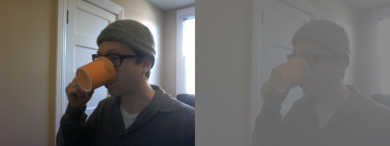

ofxCvFloatImage

class methods
- ofxCvFloatImage()
- addWeighted()
- clear()
- contrastStretch()
- convertToRange()
- flagImageChanged()
- getFloatPixelsRef()
- getNativeScaleMax()
- getNativeScaleMin()
- getPixelsAsFloats()
- getRoiFloatPixelsRef()
- getRoiPixelsAsFloats()
- operator&=()
- operator*=()
- operator/=()
- operator=()
- resize()
- scaleIntoMe()
- set()
- setFromPixels()
- setNativeScale()
- setRoiFromPixels()
Extends
This class extends others, you can call their methods on an instance of ofxCvFloatImage too:
ofxCvFloatImage is an image class that represents the values of each color of each pixel as float values, on a scale of 0.0 - 1.0. They are a more precise but heavier (i.e. requiring more memory) way representing the data in an image. Keep in mind though that most of the image operations in OpenCV expect a grayscale image, which you can construct using the ofxCvGrayscaleImage. If you're loading image data from another image you might want to check what image scale is being used with the image to ensure that you don't get your scales wrong.
addWeighted(...)
void ofxCvFloatImage::addWeighted(ofxCvGrayscaleImage &mom, float f)
Copies the pixel data of an ofxCvGrayscaleImage into the pixel data of the ofxCvShortImage.
contrastStretch()
void ofxCvFloatImage::contrastStretch()
This increases the contrast of the image remapping the brightest points in the image to 255 and the darkest points in the image to 0.
convertToRange(...)
void ofxCvFloatImage::convertToRange(float min, float max)
Maps the pixels of an image to the min and max range passed in.
second.convertToRange(100, 140); // super low contrast

flagImageChanged()
void ofxCvFloatImage::flagImageChanged()
Flag whether the image pixel data has changed so that the ofTexture can be updated.
getFloatPixelsRef()
ofFloatPixels & ofxCvFloatImage::getFloatPixelsRef()
Returns a ofFloatPixels that contains the pixels of the image.
getNativeScaleMax()
float ofxCvFloatImage::getNativeScaleMax()
If you've set the native scale max and min using setNativeScale() this returns the maximum value.
getNativeScaleMin()
float ofxCvFloatImage::getNativeScaleMin()
If you've set the native scale max and min using setNativeScale() this returns the minimum value.
getPixelsAsFloats()
float * ofxCvFloatImage::getPixelsAsFloats()
Returns a pointer to an array of floating point numbers that represent the pixels of the image.
getRoiFloatPixelsRef()
ofFloatPixels & ofxCvFloatImage::getRoiFloatPixelsRef()
Returns a ofFloatPixels that contains the pixels within the ROI the image.
getRoiPixelsAsFloats()
float * ofxCvFloatImage::getRoiPixelsAsFloats()
Returns a pointer to an array of floating point numbers that represent the pixels of the ROI of the image.
operator&=(...)
void ofxCvFloatImage::operator&=(ofxCvImage &mom)
Binary & (Logical AND http://en.wikipedia.org/wiki/Bitwise_operation) the pixel data of the right hand side image from the current image:
cvPuppy.allocate( 320, 240 );
cvPuppy = puppyImg.getPixels(); // copy pixels from a loaded image
andPuppy.allocate( 320, 240 );
andPuppy.set(255, 0, 0); // make the AND image red
andPuppy &= cvPuppy; // will & all the bits
operator*=(...)
void ofxCvFloatImage::operator*=(float scalar)
Multiplies the pixel data of the right hand side image from the current image:
first *= second; // both are ofxCvFloatImage instances
operator*=(...)
void ofxCvFloatImage::operator*=(ofxCvImage &mom)
Multiplies the pixel data of the right hand side image from the current image:
first *= second; // both are ofxCvFloatImage instances
operator/=(...)
void ofxCvFloatImage::operator/=(float scalar)
Divides each pixel of the pixel data of the right hand side image from the current image:
first /= second; // both are ofxCvFloatImage instances
operator=(...)
void ofxCvFloatImage::operator=(const ofxCvColorImage &mom)
Copy the data from an ofxCvColor image into the ofxCvFloatImage instance.
operator=(...)
void ofxCvFloatImage::operator=(const ofxCvFloatImage &mom)
Copy the data from an ofxCvFloatImage image into the ofxCvFloatImage instance.
operator=(...)
void ofxCvFloatImage::operator=(const ofxCvGrayscaleImage &mom)
Copy the data from an ofxCvGrayscaleImage image into the ofxCvFloatImage instance.
operator=(...)
void ofxCvFloatImage::operator=(float *_pixels)
Copy the data from an array of floating point numbers into the ofxCvFloatImage instance. The dimensions of the array are assumed to match the dimensions of the image.
operator=(...)
void ofxCvFloatImage::operator=(unsigned char *_pixels)
Copy the data from an array of unsigned char numbers into the ofxCvFloatImage instance. The dimensions of the array are assumed to match the dimensions of the image. The values will be converted to a 0.0 - 1.0 scale.
scaleIntoMe(...)
void ofxCvFloatImage::scaleIntoMe(ofxCvImage &mom, int interpolationMethod)
Scales the image passed in to be the size of the current image,
ofxCvImage first;
first.allocate(640, 480);
ofxCvImage second;
second.allocate(320, 240);
second.scaleIntoMe(first); // first is now 320,240
set(...)
void ofxCvFloatImage::set(float value)
Set all the pixels in the image to the float value passed in. This is useful for blanking or filling an image quickly. the values are 0.0 to 1.0.
setFromPixels(...)
void ofxCvFloatImage::setFromPixels(const unsigned char *_pixels, int w, int h)
Set all the pixels in a ofxCvGrayscaleImage from a pointer to an array of unsigned char values, using the w and h parameters to determine the dimensions of the image. The array is assumed to contain color values.
setFromPixels(...)
void ofxCvFloatImage::setFromPixels(float *_pixels, int w, int h)
This allows you to set the ROI on the image from an array of pixels. Region of Interest is a rectangular area in an image, to segment object for further processing. Once the ROI is defined, OpenCV functions will operate on the ROI, reducing the number of pixels that the operation will examine.
setNativeScale(...)
void ofxCvFloatImage::setNativeScale(float _scaleMin, float _scaleMax)
Allows you to set the native scale of your images, for instance, if your images contain values ranging from 0.0 to 255.0 (unlikely, but possible) then you would want to set them to ensure that all image operations complete correctly.
setRoiFromPixels(...)
void ofxCvFloatImage::setRoiFromPixels(const unsigned char *_pixels, int w, int h)
This allows you to set the ROI on the image from an array of pixels. Region of Interest is a rectangular area in an image, to segment object for further processing. Once the ROI is defined, OpenCV functions will operate on the ROI, reducing the number of pixels that the operation will examine.
setRoiFromPixels(...)
void ofxCvFloatImage::setRoiFromPixels(float *_pixels, int w, int h)
This allows you to set the ROI on the image from an ofPixels instance. Region of Interest is a rectangular area in an image, to segment object for further processing. Once the ROI is defined, OpenCV functions will operate on the ROI, reducing the number of pixels that the operation will examine.
comments powered by Disqus
Tuesday, 19 January 2016 04:46:35 UTC
에 마지막으로 업데이트됨 -
5856b13127093a12489754fb24d269310f488cd0
hosting for openFrameworks.kr is provided by github.com
comments
You can add comments with usage examples or other information for each class, method or variable, for adding documentation to an empty section or reporting errors is better to send a fix or open an issue through github.
When posting code enclose it in: